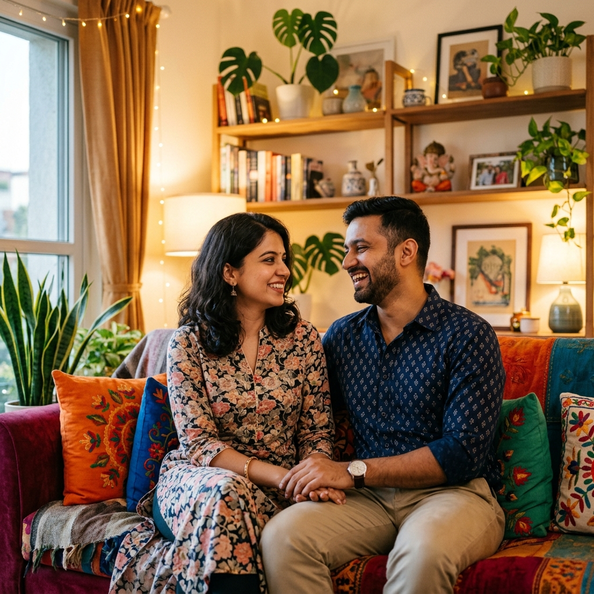

നവ ദമ്പതികൾക്കായുള്ള
വിവാഹപൂർവ്വ മാസ്റ്റർക്ലാസ്സ്
പരസ്പരം മനസ്സിലാക്കി, സ്നേഹത്തോടെയും ആത്മവിശ്വാസത്തോടെയും ഒരു പുതിയ ജീവിതത്തിലേക്ക് പ്രവേശിക്കാൻ യുവതലമുറയെ സഹായിക്കുന്ന പ്രായോഗിക ഗൈഡ്. A practical guide helping the younger generation step into marriage with understanding, love, and confidence.
4-മണിക്കൂർ ക്ലാസ്സ് ഘടന
4-Hour Masterclass Roadmapദാമ്പത്യവിജയത്തിനായുള്ള പ്രധാനപ്പെട്ട അധ്യായങ്ങൾ ഞങ്ങൾ താഴെ പറയുന്ന രീതിയിൽ ക്രമീകരിച്ചിരിക്കുന്നു.
ആശയവിനിമയം, സ്നേഹഭാഷകൾ, ഞാൻ പ്രസ്താവനകൾ, ശ്രദ്ധയോടെയുള്ള കേൾവി. Communication, Love Languages, active listening.
വ്യത്യാസങ്ങൾ പൊരുത്തപ്പെടുത്തൽ, കുടുംബ അതിരുകൾ, തർക്കപരിഹാരം, അടുപ്പം. Adjusting differences, boundaries, intimacy.
സാമ്പത്തിക സുതാര്യത, കടബാധ്യതകൾ, ബജറ്റിംഗ്, ഭാവി സമ്പാദ്യം. Financial transparency, budgeting, future savings.
ഒരുമിച്ച് വളരുക, ദാമ്പത്യ സമവാക്യം, വിജയഘടകങ്ങൾ, പ്രതിവാര ചെക്ക്ലിസ്റ്റ്. Growing together, success pillars, checklists.
പരസ്പരം അറിയുക, അടിത്തറയിടുക
Knowing Each Other & Building Foundationsദാമ്പത്യത്തിന്റെ ഏറ്റവും പ്രധാനപ്പെട്ട അടിത്തറയാണ് പരസ്പരമുള്ള മനസ്സിലാക്കൽ. പങ്കാളിയുടെ ചിന്തകളെയും സ്വഭാവങ്ങളെയും മുൻവിധികളില്ലാതെ ഉൾക്കൊള്ളാൻ നമ്മൾ പഠിക്കേണ്ടതുണ്ട്.
ആത്മാർത്ഥമായ താല്പര്യം (Genuine Interest)
പങ്കാളിയുടെ സ്വപ്നങ്ങൾക്കും താല്പര്യങ്ങൾക്കും മുൻഗണന നൽകുക. Give priority to your partner's dreams and interests.
തുറന്ന ആശയവിനിമയം (Open Communication)
ഭയമില്ലാതെ വികാരങ്ങൾ പങ്കുവെക്കാനുള്ള ഇടം നൽകുക. Create a safe space to share emotions without fear.

5 സ്നേഹഭാഷകൾ
The 5 Love Languagesഓരോരുത്തരും സ്നേഹം പ്രകടിപ്പിക്കുന്നതും സ്വീകരിക്കുന്നതും വ്യത്യസ്ത രീതികളിലാണ്. നിങ്ങളുടെ പങ്കാളിയുടെ സ്നേഹഭാഷ തിരിച്ചറിയുക.
1. വാക്കുകൾ
Words of Affirmation2. സമയം നൽകൽ
Quality Time3. സമ്മാനങ്ങൾ
Receiving Gifts4. സഹായങ്ങൾ
Acts of Serviceഅഭിനന്ദന വാക്കുകൾ (Words of Affirmation)
പങ്കാളിയെ അഭിനന്ദിക്കുകയും പ്രോത്സാഹിപ്പിക്കുകയും ചെയ്യുന്ന വാക്കുകൾ സംസാരിക്കുക. ഉദാഹരണത്തിന്, 'നീ അതീവ സുന്ദരിയായിട്ടുണ്ട്' അല്ലെങ്കിൽ 'എനിക്ക് നിന്നിൽ അഭിമാനമുണ്ട്'.
Verbally complimenting and encouraging your partner. For example, 'You look beautiful' or 'I am proud of you'.
സംഭാഷണങ്ങളിലെ 'ഞാൻ' പ്രസ്താവനകൾ
Using 'I' Statements for Constructive Communicationതർക്കങ്ങൾ ഉണ്ടാകുമ്പോൾ പങ്കാളിയെ കുറ്റപ്പെടുത്തുന്ന രീതി ഒഴിവാക്കി നമ്മുടെ വികാരങ്ങൾ പ്രകടിപ്പിക്കാൻ 'ഞാൻ' പ്രസ്താവനകൾ സഹായിക്കും. ഇത് പരസ്പര ബഹുമാനം നിലനിർത്തുന്നു.
കുറ്റപ്പെടുത്തൽ ഒഴിവാക്കുക (Avoid Blame)
'നീ' എന്ന് തുടങ്ങുന്ന വാചകങ്ങൾ പലപ്പോഴും കുറ്റപ്പെടുത്തലായി മാറുകയും പങ്കാളി സ്വയം പ്രതിരോധത്തിലാവുകയും ചെയ്യുന്നു. 'You' statements put partners on the defensive.
വികാരം വ്യക്തമാക്കുക (State Your Feelings)
നമ്മുടെ ഉള്ളിലെ വിഷമങ്ങളും ആവശ്യങ്ങളും തുറന്നു പറയുന്നതിലൂടെ പങ്കാളിയിൽ അനുകമ്പയുണ്ടാക്കുന്നു. Sharing vulnerability evokes empathy.
പ്രായോഗിക മാറ്റം (Practical Example):
"നീ എപ്പോഴും ഫ്രണ്ട്സിന്റെ കൂടെയാണ്, എന്നെ തിരിഞ്ഞു നോക്കാറില്ല!"
"You are always with your friends, you ignore me!""നമുക്ക് ഒരുമിച്ച് സമയം ചിലവഴിക്കാൻ കിട്ടാത്തപ്പോൾ എനിക്ക് സങ്കടം തോന്നാറുണ്ട്."
"I feel sad when we don't get quality time together."ശ്രദ്ധയോടെയുള്ള കേൾവി
The Art of Active Listeningസംസാരിക്കുന്നതിനേക്കാൾ പ്രധാനം പങ്കാളി പറയുന്നത് ശ്രദ്ധയോടെ കേൾക്കുക എന്നതാണ്. ഇത് തർക്കങ്ങളുടെ തോത് വലിയ രീതിയിൽ കുറയ്ക്കുന്നു.
തടസ്സപ്പെടുത്താതിരിക്കുക (Do not interrupt)
പങ്കാളി പറഞ്ഞു തീർക്കുന്നതുവരെ നിങ്ങളുടെ ന്യായീകരണങ്ങൾ പറയാൻ ധൃതി കാണിക്കാതിരിക്കുക. Listen fully before jumping to defend yourself.
വികാരം ഉൾക്കൊള്ളുക (Empathize)
അവരുടെ വാക്കുകൾക്ക് പിന്നിലെ സങ്കടമോ ദേഷ്യമോ മനസ്സിലാക്കാൻ ശ്രമിക്കുക. Understand the emotions behind their words.
ശ്രദ്ധിക്കേണ്ട കാര്യങ്ങൾ (Rules to Follow):
-
✔
മൊബൈൽ ഫോൺ മാറ്റിവെക്കുക: സംസാരിക്കുമ്പോൾ ഫോണിലേക്ക് നോക്കാതിരിക്കുക. Put away your phone during key conversations.
-
✔
ഉറപ്പ് വരുത്തുക (Reflect & Clarify): "നീ ഉദ്ദേശിച്ചത് ഇതാണോ?" എന്ന് ചോദിച്ചു സംശയം തീർക്കുക. Ask "Do you mean this?" to avoid misunderstandings.
വ്യത്യാസങ്ങളെ അംഗീകരിക്കുക
Embracing Differences & Finding Alignmentരണ്ട് വ്യത്യസ്ത കുടുംബ സാഹചര്യങ്ങളിൽ നിന്നും സംസ്കാരങ്ങളിൽ നിന്നും വരുന്ന വ്യക്തികൾ ഒരുമിച്ചു ജീവിക്കുമ്പോൾ സ്വാഭാവികമായും അഭിപ്രായവ്യത്യാസങ്ങൾ ഉണ്ടാകും.
അഭിപ്രായവ്യത്യാസങ്ങൾ സ്വാഭാവികം
വ്യത്യസ്ത അഭിപ്രായങ്ങൾ ശത്രുതയല്ല, മറിച്ച് രണ്ടു കാഴ്ചപ്പാടുകൾ മാത്രമാണ്. Differences are perspectives, not hostility.
പൊരുത്തപ്പെടൽ (Compromise)
ആരാണ് ജയിക്കുന്നത് എന്നതിലല്ല, ബന്ധം എങ്ങനെ മികച്ചതാക്കാം എന്നതിലാണ് കാര്യം. It's not about who wins, it's about winning together.
കുടുംബങ്ങളിലെ അതിർവരമ്പുകൾ
Healthy Boundaries with Families & In-lawsമാതാപിതാക്കളെ ബഹുമാനിക്കുന്നതോടൊപ്പം തന്നെ സ്വന്തം ദാമ്പത്യത്തിന്റെ സ്വകാര്യതയും സ്വാതന്ത്ര്യവും സംരക്ഷിക്കാൻ ആരോഗ്യകരമായ അതിരുകൾ ആവശ്യമാണ്.
ദാമ്പത്യ സ്വകാര്യത (Marital Privacy)
നിങ്ങളുടെ വ്യക്തിപരമായ പ്രശ്നങ്ങൾ മൂന്നാമതൊരാളുമായി (മാതാപിതാക്കളായാലും) ഉടനടി പങ്കുവെക്കാതിരിക്കുക. Avoid immediate external involvement in personal disputes.
ഒരുമിച്ചുള്ള തീരുമാനങ്ങൾ (Joint Decisions)
കുടുംബ കാര്യങ്ങളിൽ തീരുമാനമെടുക്കുന്നതിന് മുൻപ് ദമ്പതികൾ പരസ്പരം ചർച്ച ചെയ്യുക. Consult each other before family commitments.
ശ്രദ്ധിക്കേണ്ട പ്രധാന തത്വം (Golden Rule):
"നിങ്ങളുടെ പങ്കാളിയെ മാതാപിതാക്കളുടെ മുന്നിൽ താഴ്ത്തിക്കെട്ടാതിരിക്കുക. മറ്റുള്ളവർ പങ്കാളിയെ ബഹുമാനിക്കുന്നത് നിങ്ങൾ അവരെ എങ്ങനെ കാണുന്നു എന്നതിനെ ആശ്രയിച്ചിരിക്കും."
"Never disparage your partner in front of your parents. Their respect for your partner mirrors how you value them."തർക്കപരിഹാര ശൈലികൾ
Conflict Resolution Stylesതർക്കങ്ങൾ ഉണ്ടാകുമ്പോൾ നിങ്ങൾ സാധാരണയായി സ്വീകരിക്കുന്ന ശൈലി ഏതാണ്? ഒരുമിച്ച് കണ്ടെത്തി തിരുത്താം.
1. ഒഴിവാക്കൽ
Avoiding2. വാശി പിടിക്കൽ
Competing3. കീഴടങ്ങൽ
Accommodating4. സഹകരണം
Collaboratingഒഴിവാക്കൽ (Avoiding Style)
പ്രശ്നങ്ങളെ അഭിമുഖീകരിക്കാതെ ഒളിച്ചോടുന്ന രീതി. ഇത് താൽക്കാലിക സമാധാനം നൽകുമെങ്കിലും ഉള്ളിൽ നീരസം വളർത്താൻ കാരണമാകും.
Ignoring or avoiding the conflict. Provides temporary peace but breeds long-term resentment.
ആത്മബന്ധവും അടുപ്പവും
Intimacy & Deep Connectionഅടുപ്പം എന്നത് കേവലം ശാരീരികം മാത്രമല്ല. ഒരു നല്ല ദാമ്പത്യത്തിൽ 4 തരം അടുപ്പങ്ങൾ ഒരുപോലെ പ്രധാനമാണ്.
1. വൈകാരിക അടുപ്പം (Emotional Intimacy)
മനസ്സിലുള്ള ഭയവും ആഗ്രഹങ്ങളും തുറന്നു പങ്കുവെക്കാനും പരസ്പരം പിന്തുണ നൽകാനുമുള്ള കഴിവ്. Sharing fears, vulnerabilities, and support.
2. ബൗദ്ധിക അടുപ്പം (Intellectual Intimacy)
ആശയങ്ങൾ, പുസ്തകങ്ങൾ, രാഷ്ട്രീയ വീക്ഷണങ്ങൾ, വ്യക്തിപരമായ മൂല്യങ്ങൾ എന്നിവയെക്കുറിച്ചുള്ള ചർച്ചകൾ. Sharing thoughts, ideas, and values.
3. വിനോദങ്ങളിലെ അടുപ്പം (Recreational Intimacy)
ഒരുമിച്ച് യാത്രകൾ ചെയ്യുക, കളികളിൽ ഏർപ്പെടുക, ഹോബികൾ പങ്കിടുക. ഒരുമിച്ച് ചിരിക്കാൻ പഠിക്കുക. Sharing hobbies, travel, and laughter.
4. ശാരീരിക അടുപ്പം (Physical Intimacy)
പരസ്പരം തൊടൽ, കെട്ടിപ്പിടിക്കൽ, ചുംബനങ്ങൾ, ലൈംഗികത എന്നിവയിലൂടെയുള്ള സ്നേഹപ്രകടനങ്ങൾ. Hugs, touches, and sexual connection.
സാമ്പത്തിക സുതാര്യത
Financial Transparency & Joint Planningപല കുടുംബപ്രശ്നങ്ങളുടെയും പ്രധാന കാരണം സാമ്പത്തികമായ പൊരുത്തക്കേടുകളാണ്. വിവാഹജീവിതത്തിലേക്ക് കടക്കുമ്പോൾ പണത്തെക്കുറിച്ചുള്ള തുറന്ന ചർച്ചകൾ അത്യന്താപേക്ഷിതമാണ്.
തുറന്ന ചർച്ചകൾ (Disclose Finances)
രണ്ടുപേരുടെയും വരുമാനവും ശമ്പളവും പരസ്പരം കൃത്യമായി അറിഞ്ഞിരിക്കുക. Be transparent about incomes and individual earnings.
ബജറ്റിംഗ് & ലക്ഷ്യങ്ങൾ (Budgeting & Goals)
രണ്ടുപേരും ഒരുമിച്ച് മാസ ബജറ്റുകൾ പ്ലാൻ ചെയ്യുകയും സമ്പാദ്യ ശീലങ്ങൾ വളർത്തുകയും ചെയ്യുക. Plan monthly budgets and future goals collaboratively.
കടബാധ്യതകളും സമ്പാദ്യങ്ങളും
Debts, Savings & Financial Rulesവിവാഹജീവിതം തുടങ്ങുന്നതിനു മുൻപ് തന്നെ നിലവിലുള്ള എല്ലാ ബാധ്യതകളും പങ്കാളിയോട് തുറന്നു പറയുന്നത് ഭാവിയിലെ വലിയ സാമ്പത്തിക പ്രതിസന്ധികൾ ഒഴിവാക്കും.
കടങ്ങൾ മറച്ചുവെക്കരുത് (Never Hide Debts)
ലോണുകൾ, ക്രെഡിറ്റ് കാർഡ് കുടിശ്ശികകൾ എന്നിവ കൃത്യമായി പങ്കാളിയുമായി പങ്കുവെക്കുക. Disclose credit cards and outstanding loans.
അടിയന്തിര ഫണ്ട് (Emergency Fund)
കുറഞ്ഞത് 3-6 മാസത്തെ ചെലവുകൾക്ക് ആവശ്യമായ പണം അടിയന്തിര ആവശ്യങ്ങൾക്കായി സൂക്ഷിക്കുക. Keep 3-6 months of expenses in an emergency fund.
സാമ്പത്തിക നിയമങ്ങൾ (Financial Rules):
- 50% - ആവശ്യങ്ങൾ (Needs: വീട്ടുചെലവ്, വാടക)
- 30% - ആഗ്രഹങ്ങൾ (Wants: വിനോദം, യാത്ര)
- 20% - സമ്പാദ്യം / നിക്ഷേപം (Savings/Investments)
ഒരുമിച്ച് വളരുക, ഒരു ലക്ഷ്യത്തിലേക്ക്
Growing Together & Shared Visionവിവാഹം എന്നത് കേവലം ഒരു ചടങ്ങല്ല, അതൊരു ജീവിതകാലം മുഴുവൻ നീണ്ടുനിൽക്കുന്ന യാത്രയാണ്. ഇതിൽ ഉയർച്ച താഴ്ചകൾ ഒരുമിച്ച് നേരിടാൻ നമ്മൾ തയ്യാറാകണം.
വ്യക്തിഗത വളർച്ചയെ പിന്തുണയ്ക്കുക
പങ്കാളിയുടെ തൊഴിൽപരവും വ്യക്തിപരവുമായ സ്വപ്നങ്ങൾക്ക് പൂർണ്ണ പിന്തുണ നൽകുക. Support your partner's career and personal growth.
ഒരുമിച്ച് ലക്ഷ്യങ്ങൾ കണ്ടെത്തുക
ഭാവിയിലേക്കുള്ള വീട്, കുട്ടികൾ, കുടുംബ മൂല്യങ്ങൾ എന്നിവ ചർച്ച ചെയ്തു രൂപീകരിക്കുക. Discover and align on future family values and goals.
ദാമ്പത്യ സമവാക്യം
The Marriage Equationഅഹംഭാവം പൂജ്യത്തോട് അടുക്കുമ്പോഴും, ആശയവിനിമയവും വിശ്വാസവും പരമാവധി ഉയരുമ്പോഴും ദാമ്പത്യവിജയം അനന്തമായി വർദ്ധിക്കുന്നു. As ego approaches zero, and communication and trust peak, marital success grows exponentially.
വിജയത്തിന്റെ 4 പ്രധാന തൂണുകൾ (4 Pillars)
പ്രതിവാര ദാമ്പത്യ ചെക്ക്ലിസ്റ്റ്
Weekly Relationship Checklistബന്ധങ്ങൾ എപ്പോഴും മനോഹരമായിരിക്കാൻ താഴെ പറയുന്ന ശീലങ്ങൾ ഓരോ ആഴ്ചയും ഒരുമിച്ച് പ്രാവർത്തികമാക്കുക. (ക്ലിക്ക് ചെയ്ത് പരിശോധിക്കുക)
| സ്റ്റാറ്റസ് | പ്രവർത്തി (Weekly Habit) | ലക്ഷ്യം (Purpose) |
|---|---|---|
| ഡേറ്റ് നൈറ്റ് / പ്രത്യേക സമയം Date Night / Exclusive Couple Time | ആഴ്ചയിൽ ഒരിക്കൽ കുറഞ്ഞത് 1 മണിക്കൂർ തടസ്സങ്ങളില്ലാതെ സംസാരിക്കാൻ മാറ്റിവെക്കുക. Dedicate at least 1 hour a week for focused couple talk. | |
| ബജറ്റ് അവലോകനം Weekly Expense & Budget Review | സാമ്പത്തിക കാര്യങ്ങളിലെ പരസ്പര വ്യക്തത ഉറപ്പാക്കുകയും ബജറ്റ് ക്രമീകരിക്കുകയും ചെയ്യുക. Maintain transparency on finances and manage the weekly budget. | |
| നന്ദിയും സ്നേഹവും പ്രകടിപ്പിക്കൽ Appreciation & Gratitude Check | പങ്കാളി ചെയ്ത നല്ല കാര്യങ്ങൾ ഓർക്കുകയും നന്ദി പറയുകയും ചെയ്യുക. Express sincere thanks for specific gestures and assistance. | |
| മനസ്സ് തുറന്നുള്ള ചർച്ചകൾ Emotional & Spiritual Alignment | വ്യാകുലതകൾ, സന്തോഷങ്ങൾ എന്നിവ തുറന്നു പങ്കുവെക്കുക. മുൻവിധിയില്ലാതെ കേൾക്കുക. Share emotional highlights, concerns, and listen non-judgmentally. |